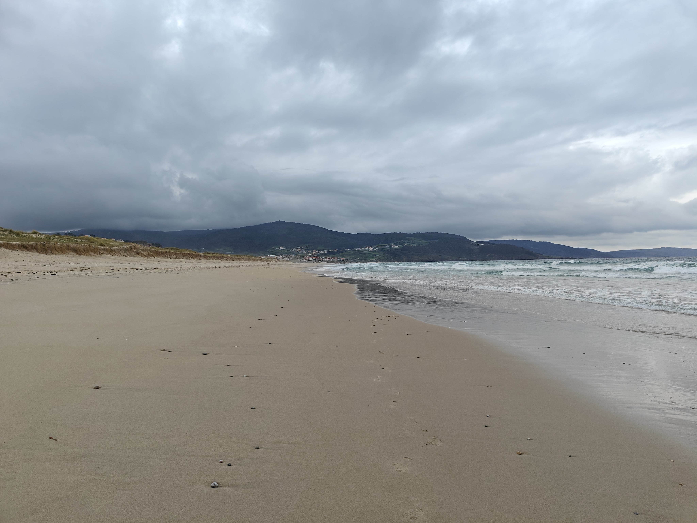
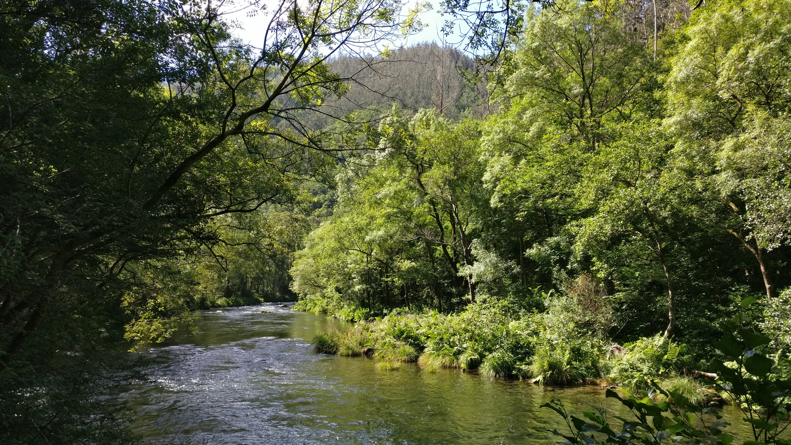
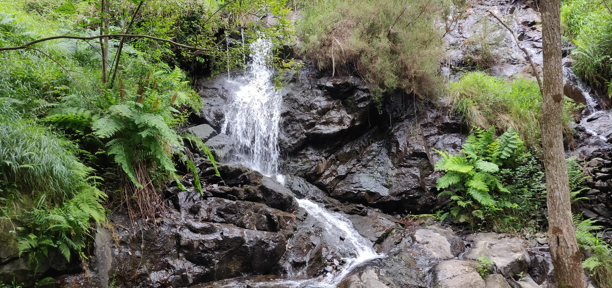

Playa de Razo-Baldaio, un rincón paradisíaco en la Costa da Morte

Paseo do río Anllons, naturaleza y paz en cada rincón

Atardeceres inolvidables en la Costa da Morte

Puente sobre el río Anllons

Fervenza en la parroquia de Rus
Utiliza los botones de siguiente y anterior para navegar por la galería.